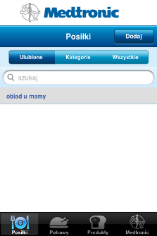
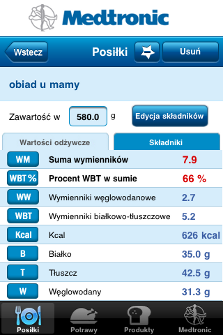
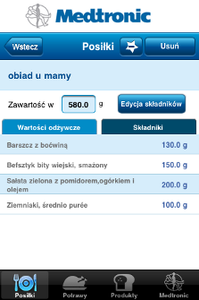
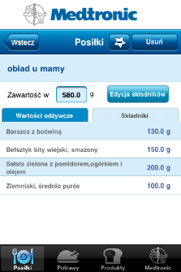
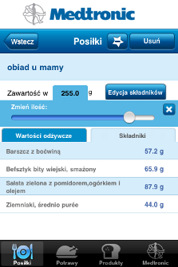

Zakładka Posiłki przedstawia dodane przez użytkownika posiłki (o dodawaniu własnych potraw przeczytasz w zakładce "Dodawanie potraw").
Lista posiłków podzielona jest na zakładki:
Ulubione - to posiłki dodane do ulubionych przez użytkownika (więcej w sekcji "Ulubione" w pomocy).
Kategorie - posiłki są skatalogowane za pomocą kategorii.
Wszystkie - dostępne aktualnie w aplikacji posiłki, ułożone alfabetycznie.
Aby przejść do konkretnego posiłku:
-
Wybierz u dołu zakładkę "Posiłki", następnie wybierz jeden z posiłków.

-
Pokaże się ekran szczegółów posiłku. Oprócz wartości odżywczych i wyliczonych WW (wymienniki węglowodanowe), WBT (wymienniki białkowo - tłuszczowe), WM (suma wymienników) i procentu WBT, znajduje się spis jego składników.

-
Aby wyświetlić listę składników dotknij zakładki "Składniki". Każdy ze składników można kliknąć, aby zobaczyć jego szczegółowy widok.

-
Przycisk "Edycja składników" pozwala na zmianę propocji wagowych składników lub ich usuwanie. Więcej o edycji składników przeczytasz w zakładce pomocy "Edycja składników".

-
Wagę całego posiłku możesz zmienić po dotknięciu pola jego aktualnej wagi. Więcej o możliwościach zmiany wagi elementów przeczytasz w zakładce pomocy "Zmiana wagi".
